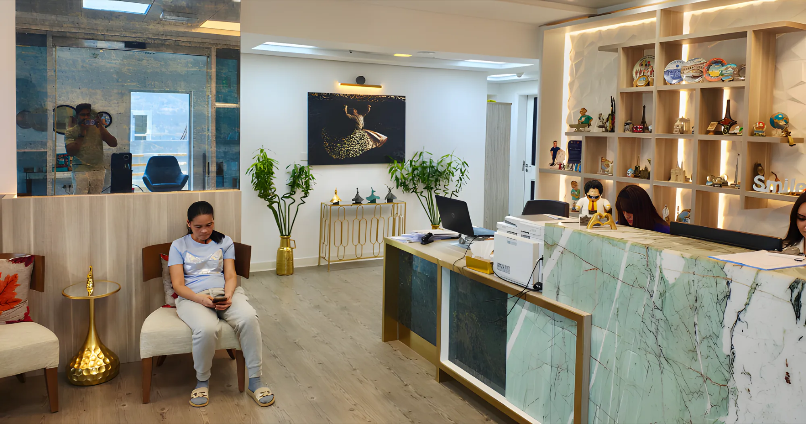
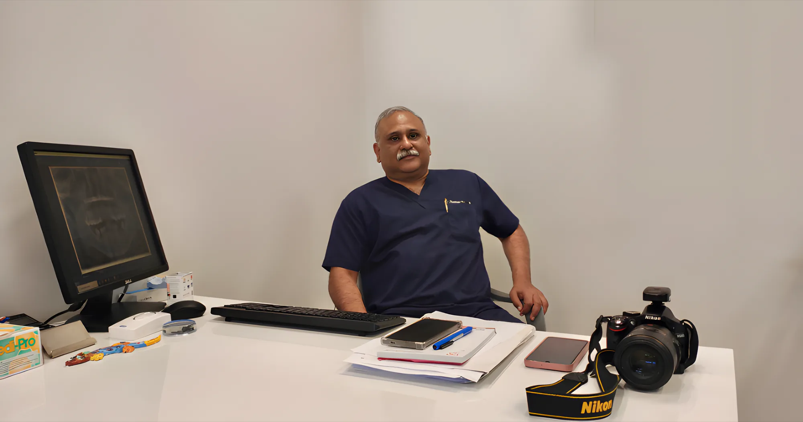

Dr. Thomas Thomas
MDS, specialist dental surgeon in prosthodontics. Treating expatriates and Kuwaitis in Kuwait since 2002.

At his desk on the 10th floor.
From Manipal to Ras Salmiya
After graduating from Manipal Dental College in Mangalore, Dr. Thomas did his masters in prosthodontics at SDM Dental College, Dharwad, and stayed on as an assistant professor. He practised for two years in Kottayam, Kerala, before joining private practice in Kuwait in 2002.
- BDSManipal Dental College, Mangalore
- MDSMasters in Prosthodontics, SDM Dental College, Dharwad
- SDMAssistant professor at his alma mater
- KottayamTwo years in practice in Kerala
- 2002Joins private practice in Kuwait
- 2020–23President of IDAK, the Indian Dental Association Kuwait
His speciality is crown and bridge work and prosthodontics: implants, crowns, bridges, veneers and dentures. Alongside it he does general dentistry, root canals, extractions, fillings, children and gums, so families get a full answer to their dental problems in one place.
He is well known in Kuwait's Indian community, and the clinic's idea is simple: treatment is similar in most clinics, so we keep the cost as economical as we can.
Who you'll see
Dr. Thomas Thomas
MDS, Specialist in Prosthodontics
Sees every patient himself: crowns, bridges, veneers, dentures, root canals, extractions, fillings, children and gums.
Dr. Jay Govind
Visiting orthodontist
Specialist in orthodontics who has treated hundreds of patients in Kuwait. Metal and ceramic braces.
Inside the clinic

Reception
10th floor
Waiting lounge
Green sofas, city view
Treatment room
Where you'll be seen
Dr. Thomas's desk
Consultations
The lift lobby
Floor 10
B Clinic sign
At the entrance
B Clinic Building
Hamad Al-Mubarak StreetBook a visit with Dr. Thomas
Saturday to Thursday, 1pm to 8pm. Friday closed. Send a WhatsApp with what's bothering you and a time that suits you.